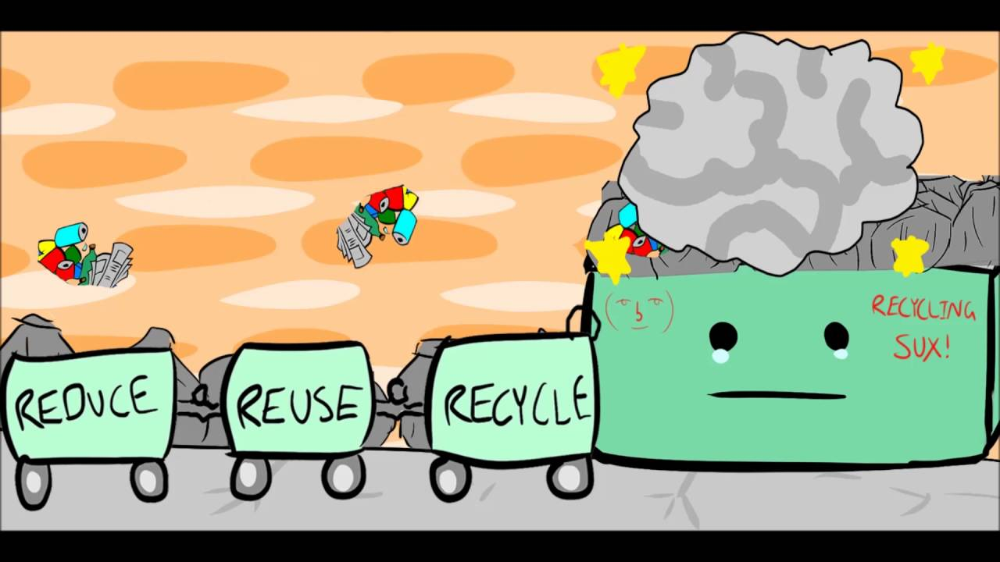

|
RECYCLEAIDTOGETHER WE CAN MAKE A DIFFERENCE |
|
RECYCLEAIDTOGETHER WE CAN MAKE A DIFFERENCE |
|
In RECYCLEAID we deal with the waste materials in various categories like electronics, food, medicine, paper, plastic and clothes. Here we are tied up with some companies who deal with these materials. The company just take away the waste material and reintroduce those materials to needy people. Or they can provide some help to the people who are suffering in the disaster place by giving them these materials. One more thing we also recycle the material in our own factory. We have one organisation linked with us, they do awareness campaign in some areasth about guiding them how they can reduce the waste material. Let us join our hands so that we can do the 3R-Reduce,Reuse and Recycle to our waste material. |
 |
GUIDING PRINCIPLES OF RECYCLEAID
Environmental Sustainability – Our operations reflect how we integrate environmental sustainability into the business. Our broader approach encompasses addressing issues like Climate Change.
Impacting the BOP – We believe in creating maximum positive impact for the people from bottom of pyramid by providing employment and measures for social as well as financial inclusion.
Client Service – We aim to provide high quality service to our clients, serving them consistently for their implied and stated needs.
Innovation – We always want to push back the limits of knowledge, discovering new ways that are truly different and surprising.
Conducive working environment – Let’s Recycle offers an environment where employees have the opportunity to climb the career ladder and work in a synergetic environment.
Maximizing value for the share holder – We strive to keep a balance among the 3P’s (Planet, People and Profit) of sustainability, in such a way that it creates feasible value for the shareholders.
OUR VALUES
Integrity – We at Let’s Recycle strongly regard moral uprightness. We uphold oneself to consistently moral and ethical standards.
Equality – We follow a non-hierarchical work atmosphere, where each individual is treated at par with one another regardless of their status, gender, role, class, caste or creed.
Transparency – We at Let’s Recycle value transparency in transaction, communication and compliance.
Commitment – We assure efficiency and high quality output that comes with commitment to each task we carry out.
Inclusion – Our continuous efforts lie in empowering people in the marginalized section and including them in the mainstream, both socially and financially.
CHIEF ORGANISERS: